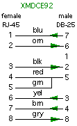
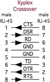
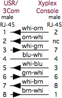

|
Older (and un-modified) Xyplex terminal servers, specifically the
1600 and 1800 product family, Will Send Serial BREAK when the
Xyplex device is power cycled. These units send the BREAK signal to
all of their serial ports as soon as the power is turned off, or the
power is accidentally disconnected. If you have any older Sun
Microsystems server consoles attached to the Xyplex, this Serial
BREAK signal will cause these machines to halt, and come to the
"ok>" prompt.
ASP Technologies developed some
hardware dongles to prevent some terminal server devices from sending
Serial BREAK. At one point, they sold a dongle that would be soldered
in-line between the DC output of the power supply of the older Xyplex
devices, and their main circuit board. There is no good way to tell if
your older Xyplex hardware has one of these dongles, unless you open
the case and look. (ASP made other devices for Digi products that would
connect in-line with the power lead coming to the Digi product from
external devices. These dongles were visible outside the Digi device.)
When iTouch Communications bought the Xyplex product line, they
continued to support (and sell) the older units, but the also developed
the In-Reach product family, and they made sure that they wouldn't
send Serial BREAK unless you command the port to send the signal.
MRV Communications (iTouch's parent company), started re-branding
all of their products in 2004, including the
In-Reach line and
integrated power control.
If you are interested in learning more about which devices send Serial
BREAK at inappropriate times, please check our
BREAK Testing Pages.

|
When you are deploying console servers, you may
still want to have a way to wheel a terminal or a
laptop up to a machine to check configurations
(basically, the practical (or paranoid) among us
want to have a safety net, in case the console
services fail). In this case, using
modular adapters
actually simplifies our job!
By connecting all of your remote consoles to the
patch panels (or to the RJ-45 ports on Console Servers)
using straight-through Ethernet cables, all you need to
do is connect an adapter to your laptop, and set up
a Terminal Emulator package to talk to the serial
port of the laptop.
To connect your PC to a
Xyplex-wired console server or patch panel, you would
use the XFDCE91 adapter, and a terminal
emulation program.
If you want to set up a "crash cart",
I'd also suggest that you set the serial port speed
on all of your consoles to 9600 bps, 8-N-1 (since
that seems to be the most common setting). Having
a common speed removes one more variable to have
to remember during a crisis.
If you want your "crash cart" to take
the place of your console server, you should use the
XFDTE91adapter. This way, you can unplug a
hosts cable from the console server, and connect it
directly to the adapter on the crash cart, without
the need for a null-modem connection.
When you have successfully configured your
devices, all you need to do is disconnect the cable
from the adapter on your PC, and connect the cable
to a port on a Xyplex console server.
If you have any
Sun workstations connected to your
console services, you should test to make sure that
your terminal emulator software doesn't send a
serial BREAK when you start/stop it, since the
BREAK signal will likely send your Sun host to the
OK prompt. (This has also
been reported on some SGI and NeXT hosts.)
|
|
|
Copy the Xyplex software image xpcsrv20.sys and
loader image mcffs1.sys to a the local tftp server
directory.
Boot the Xyplex either via card, BOOTP, or DTFTP.
Login and set priv mode.
Enter the following commands one at a time being sure to
modify the pathname and tftp server IP address for your
network.
format card option 3 nonredundant
set server get card load file "xpcsrv20.sys" ip address 192.168.10.3 area 2
set server get card load file "mcffs1.sys" ip address 192.168.10.3 area 1
|
Type show manager files to verify a proper card format and
to see that system files are present. Compare your output to the
example output below.
MX1608B V6.3 Rom 440000 HW 11.00.00 Lat Protocol V5.2 Uptime: 0 00:04:40
Address: 08-00-87-0F-F3-03 Name: CONSOLE01.ELKINS Number: 0
01 Jan 1986 00:04:40
Files from directory /MC/SYSTEM
File Name Version Date Time Size
MCFFS1.SYS V2.15 22 Dec 2002 23:25:50 28928 bytes AREA 1 Size 64886
XPCSRV20.SYS V6.3 22 Dec 2002 23:23:56 796096 bytes AREA 2 Size 1768897
2 files, 825024 bytes.
Files from directory /MC/PARAM
File Name Version Date Time Size
-0FF303.SYS ver 17 01 Jan 1986 00:04:16 5076 bytes
DEFAULTS.SYS ver 0 22 Dec 2002 23:21:48 1024 bytes
2 files, 6100 bytes.
|
Type "init del 1" to reboot the term server and
test the new card.
|
|
The older Xyplex devices are a bit tricky to install into
console server roles. If you are connecting your network
equipment console ports to your console server, remember to
consider;
- Setting an idle timeout on the console exec of the
network gear
- You probably don't want someone to leave a port in
the enabled mode...
- Consider adding a password to the async ports of the
network gear (just like you do for read-only access via telnet.)
|
|
Configuring a Xyplex 1600 for Console Server use:
(This should be a good starting point for Xyplex 1800, and iTouch
In-Reach console servers as well.)
1. Connect the ethernet port of the Xyplex to the console
network switch. (The Xyplex units won't respond on their
console ports if the "LAN" LED isn't lit.
If you have a 10-Base-T connector, the easy solution is to
attach a BNC "T" connector, to this port,
and attach a pair of 50-ohm terminators. If you attach a
transciever, you will need to connect it to something
else, to get 'link', before the LAN LED will light.
2. Connect the included Xyplex cable to port 1 of the
term server, and plug the DB9 adapter into the COM port of
your PC. Other options are to use a straight through cable
(green) with a yellow XFDCE adapter, or a yellow Xyplex roll
cable with a black XFDCE adapter. (The default port settings
are 9600 bps, 8 data bits, No parity, and 1 stop bit,
commanly displayed as 9600-8-N-1. If you are inheriting
a used chassis, some of the port speeds may be different.)
3. Press enter until a prompt appears. By default, the
Xyplex ports will try to autobaud (to automatically
detect and match the serial port speed to the serial speed
of the attached device), and the Xyplex code is looking for the
carriage return ([enter] or [return] key) character.
3a. If you don't get a prompt on the lowest numbered
port, try the highest numbered port, and then start working
your way through the entire range. You may have a terminal
server that has a presious connection that doesn't give you
a prompt...but they probably left at least one port
working in a normal mode...
4. Once you have a prompt from the unit, enter the
configuration mode type "set priv" and
press the [enter] (or [return]) key. Then type the
default priveleged password. (The default password is
system.)
5. Cut and paste the commands from the table below, into
a text editor, and modify some of the settings for use in
your network. (Things like the host name, network info,
domain info, PASSWORDS...) Note that some of the lines
apply to ALL the ports, a few to almost-all of
the ports, and a few commands only apply to one or two ports.
In the example below, I'm using a 16-port device, and I'm
reserving the highest port (16) as my local console port,
and using ports 1-15 for normal Console Server access.
5a. Note: To make changes to both the running config
and the stored config simultaneously, type "define server
change enabled" on the Xyplex console before editing
any other parameters on the Xyplex console.
5b. Once you have the text file configured the way you
want it, copy the lines into a terminal program (to send the
commands to the Xyplex via the serial port).
5c. Whether you type the lines by hand, or copy-and-paste
the data, you may run into syntax errors. This may happen because
of a typografic error, or because the version of Xyplex code you are
running does not support the command(s) that cause the error. Things
to be aware of include;
- Pressing return with a partially-completed command will show you
the available arguments for the next part of the command.
- The -701- errors are usually an incomplete command.
- The -702- errors are usually a spelling error (but the Xyplex
will tell you which word was not recognized, and what the available
keywords are for that part of the command.
- Some commands want double-quotes around parts of the argument.
If you don't use the double-quotes, the command won't be accepted.
- If you think I've made a typo here (or the Xyplex tells you to
spell a command (such as 'pasthru') a particular way, I offer this
small bit of advice: "Let the Wookie win!" (Type it the
way the software wants to see it typed.)
6. Once you have input all of the commands you wish to input,
type "init del 1" to reboot the Xyplex and activate the changes.
7. If you used the config I've given below, the new local
access port will become port 16, so to reconnect after rebooting you
will need to move the cable to port 16.
8. Now set the time and date with the commands
set server time xx:xx:xx
set server date dd mmm yyyy ("mmm" is the
first three letters of the month.)
9. Done.
|
|
The list below are the recommended settings. If you have older
firmware, some of these commands may not work on your unit. The
variables shown in bold are meant to call your attention
to the port numbers, or to important, site-specific information
for your network. (The port numbers refer to a 16-port device.)
define server change enabled [<-- if you want to make changes live...]
define server name console01.subnetwork
define server int name console01.subnetwork.subdomain.domain.net
define server welcome "console01.subnetwork.subdomain.domain.net"
define login password "[insert password here]"
define priv password "[insert other password here]"
define server login prompt "passwd "
define server int address 192.168.17.32
define server int subnet mask autoconfigure disabled
define server int subnet mask 255.255.255.0
define server int pri gate address 192.168.17.254
define server int broadcast address 192.168.17.255
define server int gateway auto discovery disabled
define po 0 tel echo remote
define po 0 tel remote 23
define po 0-16 prompt "console01.subnetwork.subdomain"
define po 1-16 autoconnect enabled
define po 1-16 inactivity logout disabled
define po 1-16 flow control disabled
define po 1-16 autobaud disabled
define po 1-16 autoprompt disabled
define po 1-16 message codes disabled
define po 1-16 internet connect disabled
define po 1-16 broadcast disabled
define po 1-16 input flow control disabled
define po 1-16 output flow control disabled
define po 1-16 loss notification disabled
define po 1-15 line editor disabled
define po 1-16 verification disabled
define po 1-15 access remote
define po 16 access local
define po 16 password enabled
define po 1-16 break disabled
define po 1-16 tel newline nul
define po 1-16 tel binary session mode pasthru
define po 1-16 default sessions mode pasthru
define po 1-16 tel csi escape disabled
define po 1-16 type ansi
define po 1-16 speed 9600
define po 1-16 char size 8
define po 1-16 parity none
define po 1-16 typeahead size 2048
define po 1-16 ip tcp window size 2048
define po 1-16 uli disabled
|
|
I am a strong proponent of buying pre-wired, pre-labeled
adapters and cables. Generally speaking, you probably can't
build an adapter cheaper, if you consider the value of your
time as well as the component costs. And, whether or not I
can make 100 adapters without a mistake isn't being
questioned, I'm sure I'd rather not make 100 by myself. The
best advantages for buying pre-built adapters and pre-wired
cables include;
- Consistent wiring and labeling of the parts.
- Consistent shell colors and labels aides in
troubleshooting, by visually identifying the parts.
- Enhances reliability, knowing you can grab any
adapter and count on it being wired correctly.
- If you need a LOT of adapters or cables for a
build-out, you probably don't want to build them all
yourself!
You can purchase any of the adapters and cables listed on
these pages individually (or in bulk) from APA Cables &
Networks
(www.apacn.com). You
also have the option of buying a
Xyplex Console Kit, which
includes a complete set of adapters, and some of the
specialty cables listed above, as well
as a passive RS-232 Signal Tracer. The default shell color
is blue for Xyplex adapters. You can get the shells in
another color if you want, provided you want one of the
colors listed below:
Available colors: BK = black, GN = green,
RD = red, YL = yellow, BL = blue,
GY = grey
So, the APACN part number XFDTE91-GN would denote
the DB-9 female DTE adapter, wired for the Xyplex RJ-45
format, but supplied with a green plastic shell (instead of
the default blue shell).
APA Cables & Networks also sells adapters and adapter
kits for other RJ-45 schema, including the
Annex/Bay/Nortel,
IOLAN Rack+ and
Cisco console server
families. APA Cables & Networks uses different default
colors to make it easier to visually identify the different
RJ-45 wiring schema.
With all of this said, I also understand that sometimes
you just need to make that one cable or adapter, and buying
just one isn't practical. So, here are the schematics. (The
APA Cables & Networks part number is shown below each
adapter. If there is a Xyplex equivalent, I've noted the
Xyplex part number as well.)
APACN p/n 24490-08
|
APACN p/n 24490-09
|
APACN p/n 24490-10
|
APACN p/n 24490-11
|
APACN p/n 24490-15
|
APACN p/n 24490-12
|
APACN p/n 24490-26
|
APACN p/n 24490-25
|
APACN p/n 24490-79
|
APACN p/n 24490-80
|

APACN p/n 24490-81
|
APACN p/n 24490-82
|
|
|
As with adapters, I recommend buying pre-built,
pre-labeled, tested cables. APA Cables and Networks sells
specialty cables for connecting Xyplex consoles ports to
other console servers and devices, and these can be ordered
from the descriptions and part numbers shown below. The
default length is 7 feet, but you can order custom lengths
as needed. The cables come with black boots on the RJ-45
end, and labels denoting the Xyplex end. The MMJ end does
not get a boot, since they can't find anyone who makes a
colored MMJ boot.
APACN p/n 24490-74
|
|
|
|

|

|
|

Null-Modem
|
APACN p/n 24490-87
|

|

|
|
|
|
U.S. Robotics (USR, now
3-Com) digital modem chassis have a different pinouts
than Cisco on the console ports on their NICs and NACs.
You can accommodate these devices by combining a
XFDTE adapter with a USR cable
(part number 1.009.691-B) attached to the USR console
port, and an ethernet cable to connect the
XFDTE adapter to the Xyplex port.

You can also make a single cable, with RJ-45 male
connectors on each end. Make sure that you label both ends
of the cable, since the wiring is not symmetrical (it makes
a difference which end plugs into the Xyplex port!) APA
Cables and Networks sells a couple of cables for this (black
boot on the Xyplex end, orange boot on the USR end);
APACN p/n 24490-83
|

|
|
|
Sun Netra, T3 Hardware
Most Sun hardware has used a female DB-25 connector for
the TTY A and B ports. (Use a XMDCE
adapter to connect to a Xyplex console port.)
The Sun Netra T-1 (model 105) uses an RJ-45 console, and
it happens to be wired identically to the Cisco console
port.
- To connect a Netra T-1 105 to a Xyplex console port,
use a ciscoc-xyplex cable.
APACN p/n 24490-74
|
|
The DB-25 serial adapter that comes with the Sun Netra
T-1 (Sun p/n 530-2889-02) is wired similarly to the
Cisco part 29-0808-01, (APACN
CMDCE
adapter, with the addition of adding a 'frame ground'
connection. The plastic DB-25 shell has a metalized coating,
and a drain ground lead is attached from pin 1 of the
DB-25(m) connector to a lead attached to the metalized
shell. The schematic on the Sun p/n 530-2889-03 is
similar, except they changed the colors of the wires inside
the shell (and the tabs which hold the DB-25 connector are
much more fragile, so take my word on the wiring
inside!)
If you use the Sun part (or the CMDCE part), you will geta
proper connection for the data leads, and the hardware handshaking,
but not the hardware flow control. It would be better to use the
XMDCE adapter instead, to ensure that
you can use the hardware flow control if you ever need to.
The Sun Netra T-3 disk arrays use an RJ-13
connector for it's RS-232 console, and you only get data and
ground for your connection (no flow control or handshaking).
APA Cables and Networks sells a couple of cables for
connecting these devices (black boot on the Xyplex end, no
boot on the RJ-13 end);

|
APACN p/n 24490-61
|
|
|
|
Digital Equipment Corp.
(DEC, then Compaq, then H.P.) equipment often used an RJ-13
with an offset locking tab, referred to as a Modified
Modular jack (MMJ). This included their VT-series
terminals, VAX equipment, and even newer Alpha series
equipment.
APA Cables and Networks sells a cable for this (black
boot on the Xyplex end, and no boot on the DEC end);
|
|
APACN p/n 24490-84
|
|
|
|
There are four DE-9 to Xyplex-schema RJ-45 adapters
available from APA Cables
and Networks
- female adapter, APACN part number: 24490-15
("XFDCE91").
- female adapter, APACN part number: 24490-12
("XFDTE91").
- male adapter, APACN part number: 24490-26
("XMDCE91").
- male adapter, APACN part number: 24490-25
("XMDTE91").
Rather than list all of the connection possibilities on
this page, I have created my
Xyplex Host-to-Adapters
Page, which lists which adapter (or cable) you will need
to connect any device on the list to a Xyplex, iTouch, or
MRV Communications console server port.
There are currently four additional DE-9 to Xyplex-schema
RJ-45 adapters with DSR tied to DCD available from
APACN;
- female adapter, APACN part number: 24490-79
("XFDCE92").
- female adapter, APACN part number: 24490-80
("XFDTE92").
- male adapter, APACN part number: 24490-81
("XMDCE92").
- male adapter, APACN part number: 24490-82
("XMDTE92").
Note: Some Cisco 1900-series switches use a DE-9 console
connection, instead of the RJ-45 connector. Some of these
devices do not like a connection between DE-9 pin 1 and pin
6, connecting DSR to DCD on the DE-9, while other versions
of the 1900 will require this connection. (If the
Cisco 1900 you have attached a DE-9 adapter to is spewing AT
modem commands out the port, you've got the wrong
adapter...add or remove the loop as needed.) The
XFD*E91 does not have the DCD connection tied to DSR,
while the XFD*E92 series does have the tie connecting
DSR to DCD on the DE-9.
APACN sells any of
these adapters (individual or bulk), as well as a
complete adapter/cable set.
|
|
NOTICE: Most of the pages,
articles, and tutorials on this website are
copyrighted works. You may make 'deep links' to various
pages. (If you let me know which page(s) you are linking to,
I'll let you know if I move the page(s) during updates.)
Please send me email if you wish to republish any material,
or use it on your own website.
|
Made using Nvu
Copyright 1996-2008,
David K. Z.
Harris, N6UOW

Questions? Comments? Additions? Email consoles at
conserver.com.
(Don't harvest my address, I don't want
SPAM!)
How does he do it? And
Why?
|